file: anal3_8het.m author: Polcz Péter <ppolcz@gmail.com>
Created on 2016.09.30. Friday, 12:57:51
Contents
Thomas - Garrity 6.1.1 Tetel konstruktiv bizonyitasa
Az  dimenzios terben veszek 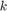 darab vektort A tetel szerint a dimenzios paralelogramma terfogata: 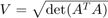
dimenzios terben veszek 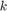 darab vektort A tetel szerint a dimenzios paralelogramma terfogata: 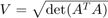
Bizonyitas: letezik olyan 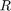 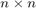-es transzformacios matrix amelynek segitsegevel a 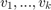 vektorok ugy forgathatok (jeloljuk ezeket  -kel), hogy a
-kel), hogy a  parhuzamos legyen
parhuzamos legyen  -el, a 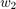 az
-el, a 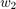 az  sikjaban legyen,
sikjaban legyen,  az
az  alterben legyen, stb..., vagyis a elforgatott vektor minden koordinata erteke legyen nulla 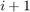-tol -ig.
alterben legyen, stb..., vagyis a elforgatott vektor minden koordinata erteke legyen nulla 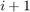-tol -ig.
n = 5; k = 3; fprintf('k darab n dimenzios vektor: ') v = rand(n,k) HyperVolume1 = sqrt(det(v'*v)) fprintf('Transzformacios matrix (ezt meg ortonormalni kell, \nhogy ne valtoztassa meg a szogeket es a hosszusagokat)\n') fprintf('A transzformacios matrix elso k eleme a v_1, ..., v_k, \na tobbi n-k elem az utolso n-k db egysegvektor') T = [ v [ zeros(k,n-k) ; eye(n-k) ] ] fprintf('Ortonormalt transzformacios matrix (QR decomposition segitsegevel)') [Q,~] = qr(T) fprintf('Ugyanaz a k darab n dimenzios vektor, \ncsak egy kicsit elforgatva T = Q^{-1} -el, \nvegyuk eszre, hogy milyen nagyon szepek ezek a vektorok!') w = Q\v fprintf('Ellonorizzuk le, hogy az sqrt(det(w''*w)) itt is ugyanazt az eredmenyt adja-e?') HyperVolume2 = sqrt(det(w'*w))' fprintf('A kapott w vektorok utolso nemnulla eleimeinek szorzata, \namibol geometriailag jol latszik, hogy ez tenyleg a terfogatot adja:') HyperVolume3_elojeles = prod(diag(w))
k darab n dimenzios vektor:
v =
0.5096 0.5767 0.1500
0.7070 0.2879 0.9463
0.7912 0.2669 0.6508
0.3307 0.8902 0.9822
0.9137 0.3661 0.1938
HyperVolume1 =
1.0066
Transzformacios matrix (ezt meg ortonormalni kell,
hogy ne valtoztassa meg a szogeket es a hosszusagokat)
A transzformacios matrix elso k eleme a v_1, ..., v_k,
a tobbi n-k elem az utolso n-k db egysegvektor
T =
0.5096 0.5767 0.1500 0 0
0.7070 0.2879 0.9463 0 0
0.7912 0.2669 0.6508 0 0
0.3307 0.8902 0.9822 1.0000 0
0.9137 0.3661 0.1938 0 1.0000
Ortonormalt transzformacios matrix (QR decomposition segitsegevel)
Q =
-0.3339 0.3537 0.5369 0.6802 0.1118
-0.4632 -0.1468 -0.6051 0.4060 -0.4826
-0.5184 -0.2332 -0.2286 -0.0820 0.7861
-0.2166 0.8718 -0.2754 -0.3423 0.0000
-0.5986 -0.1972 0.4663 -0.4987 -0.3696
Ugyanaz a k darab n dimenzios vektor,
csak egy kicsit elforgatva T = Q^{-1} -el,
vegyuk eszre, hogy milyen nagyon szepek ezek a vektorok!
w =
-1.5263 -0.8763 -1.1546
0.0000 0.8033 0.5804
0.0000 0.0000 -0.8210
0.0000 0.0000 0.0000
0.0000 0.0000 0.0000
Ellonorizzuk le, hogy az sqrt(det(w'*w)) itt is ugyanazt az eredmenyt adja-e?
HyperVolume2 =
1.0066
A kapott w vektorok utolso nemnulla eleimeinek szorzata,
amibol geometriailag jol latszik, hogy ez tenyleg a terfogatot adja:
HyperVolume3_elojeles =
1.0066